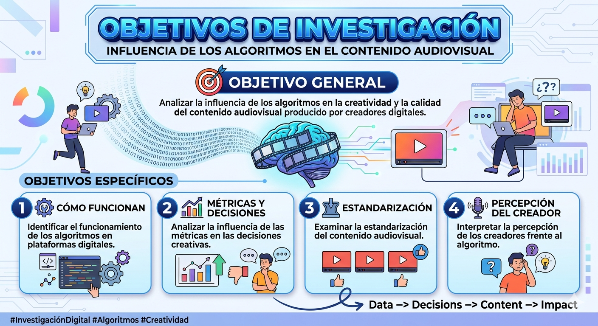

Inicio
Proyecto académico sobre la influencia de los algoritmos en la creatividad audiovisual.
Pregunta de Investigación
¿Cómo influyen los algoritmos de TikTok, YouTube e Instagram en la calidad y la creatividad de los contenidos audiovisuales producidos por creadores de contenido entre 18 y 30 años?
Delimitacion del Sujeto de Estudio
La investigación se centra en creadores de contenido audiovisual entre 18 y 30 años, activos en plataformas como TikTok, YouTube e Instagram, con una frecuencia constante de publicación. Este grupo presenta una alta exposición a las dinámicas algorítmicas y una dependencia significativa de métricas digitales para la visibilidad de sus contenidos.
Árbol de Problemas
Problema Central
Influencia de los algoritmos en la reducción de la creatividad y la calidad del contenido audiovisual.
Causas
- Predominio de métricas digitales (likes, visualizaciones y engagement).
- Presión por mantener visibilidad y monetización.
- Desconocimiento del funcionamiento del algoritmo.
- Consumo rápido basado en la economía de la atención.
- Reproducción constante de tendencias virales.
Consecuencias
- Estandarización del contenido audiovisual.
- Disminución de la experimentación creativa.
- Producción acelerada y superficial.
- Dependencia del algoritmo en las decisiones creativas.
- Agotamiento creativo en los creadores.
Impacto
- Pérdida de identidad creativa.
- Empobrecimiento del lenguaje audiovisual.
- Saturación de contenidos similares.
- Transformación de los hábitos de consumo.

Planteamiento del Problema
Las plataformas digitales como TikTok, YouTube e Instagram operan mediante algoritmos que priorizan la interacción, el tiempo de visualización y la viralidad del contenido. Estas dinámicas influyen directamente en los creadores, quienes adaptan sus producciones a las exigencias del sistema para lograr mayor visibilidad.
Como consecuencia, se observa una tendencia hacia la repetición de formatos y la reducción de la creatividad, lo que puede afectar la calidad del contenido audiovisual y limitar la diversidad narrativa en los entornos digitales.
Justificación
Esta investigación es relevante porque permite comprender el impacto de los algoritmos en la producción audiovisual contemporánea. Asimismo, aporta herramientas para que los creadores de contenido desarrollen una postura crítica frente a las plataformas digitales y tomen decisiones más conscientes en sus procesos creativos.
Hipótesis
Hipótesis General
Los algoritmos de TikTok, YouTube e Instagram influyen significativamente en la producción audiovisual, promoviendo contenidos estandarizados en detrimento de la creatividad.
Hipótesis Específicas
- A mayor dependencia de métricas digitales, menor diversidad creativa en los contenidos.
- El desconocimiento del funcionamiento del algoritmo incrementa la reproducción de tendencias virales.
- Las dinámicas de viralidad favorecen la producción de contenidos rápidos y superficiales sobre propuestas narrativas elaboradas.
Objetivos
Objetivo General
Analizar la influencia de los algoritmos en la creatividad y la calidad del contenido audiovisual producido por creadores digitales.
Objetivos Específicos
- Identificar el funcionamiento de los algoritmos en plataformas digitales.
- Analizar la influencia de las métricas en las decisiones creativas.
- Examinar la estandarización del contenido audiovisual.
- Interpretar la percepción de los creadores frente al algoritmo.

Fichas de Investigación
Ver fichasBibliografía
La presente investigación se sustenta en diversas bases teóricas que permiten comprender la relación entre los algoritmos, la cultura digital y la creatividad audiovisual en la actualidad.
Bases teóricas
- Manuel Castells (2009). Comunicación y poder. Madrid: Alianza Editorial. Explora el papel de las redes en el poder comunicacional contemporáneo.
- Henry Jenkins (2006). Convergence Culture. Nueva York: NYU Press. Analiza la participación activa de los usuarios en la cultura digital.
- Nicholas Carr (2010). The Shallows. Nueva York: W.W. Norton. Reflexiona sobre cómo el consumo digital transforma nuestra atención.
- Byung-Chul Han (2012). La sociedad del cansancio. Barcelona: Herder. Describe la lógica de rendimiento que también afecta a los creadores.
Sobre algoritmos y plataformas
- Tarleton Gillespie (2018). Custodians of the Internet. Yale University Press. Examina el rol de las plataformas en la visibilidad del contenido.
- Shoshana Zuboff (2019). The Age of Surveillance Capitalism. PublicAffairs. Explica cómo las plataformas usan datos para influir en el comportamiento.
- Google (2023). How YouTube Works. Documentación oficial del algoritmo de YouTube.
- Meta (2023). How Instagram Ranking Works. Explicación del sistema de recomendación de Instagram.
Sobre creatividad y lenguaje audiovisual
- Lev Manovich (2001). The Language of New Media. MIT Press. Referencia clave para entender el audiovisual digital.
- David Bordwell y Kristin Thompson (2010). Film Art: An Introduction. McGraw-Hill. Bases del análisis narrativo y estético.
Referentes complementarios
- Jean Baudrillard (1981). Simulacros y simulación. Reflexión sobre la hiperrealidad y la repetición de imágenes.
- Guy Debord (1967). La sociedad del espectáculo. Teoría sobre la primacía de la imagen en la vida contemporánea.